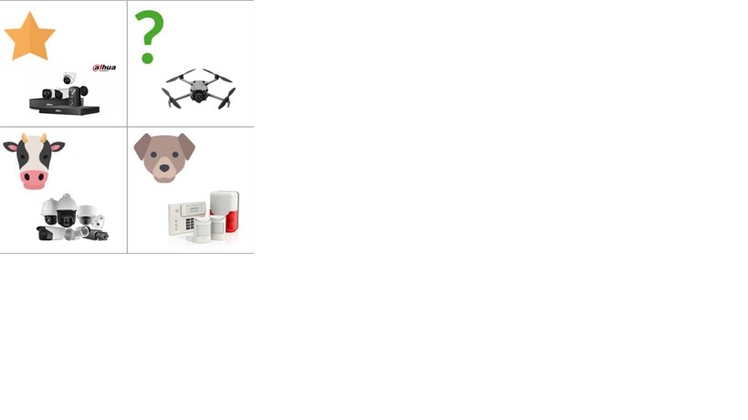

Dahua Technology es una empresa líder mundial en soluciones de videovigilancia y servicios AIoT. Fundada en 2001, se destaca por su innovación, calidad y presencia global en más de 180 países.
Permitir una sociedad más segura y una vida más inteligente, ofreciendo calidad y servicio excepcionales a través de la innovación tecnológica.
Construir una sociedad segura, inteligente y eficiente, liderando la transformación digital en el ámbito de la seguridad y la inteligencia artificial.
Dahua ofrece soluciones inteligentes que responden a la necesidad de seguridad, eficiencia y conectividad. A través de la IA y el IoT, brinda sistemas fáciles de usar, confiables y sostenibles que mejoran la experiencia del cliente.
| Factores | Consideraciones para el análisis | Variable |
|---|---|---|
| Político | Políticas gubernamentales a nivel local, regional, nacional y/o internacional que inciden directamente en la organización. | • Legislaciones sobre privacidad y videovigilancia. • Acuerdos comerciales internacionales. • Estabilidad política de los países donde opera. |
| Económico | Factores macroeconómicos que pueden afectar la ejecución de planes y estrategias. | • Inflación y tipos de cambio. • Costo de importación de componentes. • Nivel de inversión en seguridad pública y privada. |
| Social | Factores culturales, educación, religión, hábitos de consumo y tendencias sociales. Análisis de los usuarios. | • Aumento de la percepción de inseguridad. • Cambios en la aceptación del monitoreo público. • Tendencia hacia ciudades inteligentes. |
| Tecnológico | Factores asociados a la evolución tecnológica. Es necesario evaluarlos para no perder competitividad. | • Avances en IA y reconocimiento facial. • Obsolescencia rápida de tecnologías. • Integración con IoT. |
| Ecológico | Relacionados con la conservación del medio ambiente. Incluye legislación ambiental. | • Regulaciones sobre residuos electrónicos. • Producción sostenible. • Presión para reducir consumo energético. |
| Legal | Legislación del país donde se encuentra la empresa y donde busca expandirse. | • Normativas de protección de datos (ej. RGPD). • Leyes sobre seguridad electrónica. • Requisitos de certificaciones para productos. |
| Contexto Interno | FORTALEZA: Personal capacitado en instalación y configuración de sistemas modernos de cámaras de seguridad. |
| Contexto Externo | OPORTUNIDADES: Creciente demanda de seguridad dado a los niveles actuales de inseguridad |
| Contexto Externo | DEBILIDADES: Proveedores externos e internacionales |
| Contexto Externo | AMENAZAS: Vulnerabilidad a los sistemas informáticos |
Aquí puedes agregar tu análisis y explicación sobre la posición de Dahua en la matriz BCG, describiendo estrellas, interrogantes, vacas lecheras y perros.
Escaneá el código QR para acceder al documento completo del trabajo práctico.